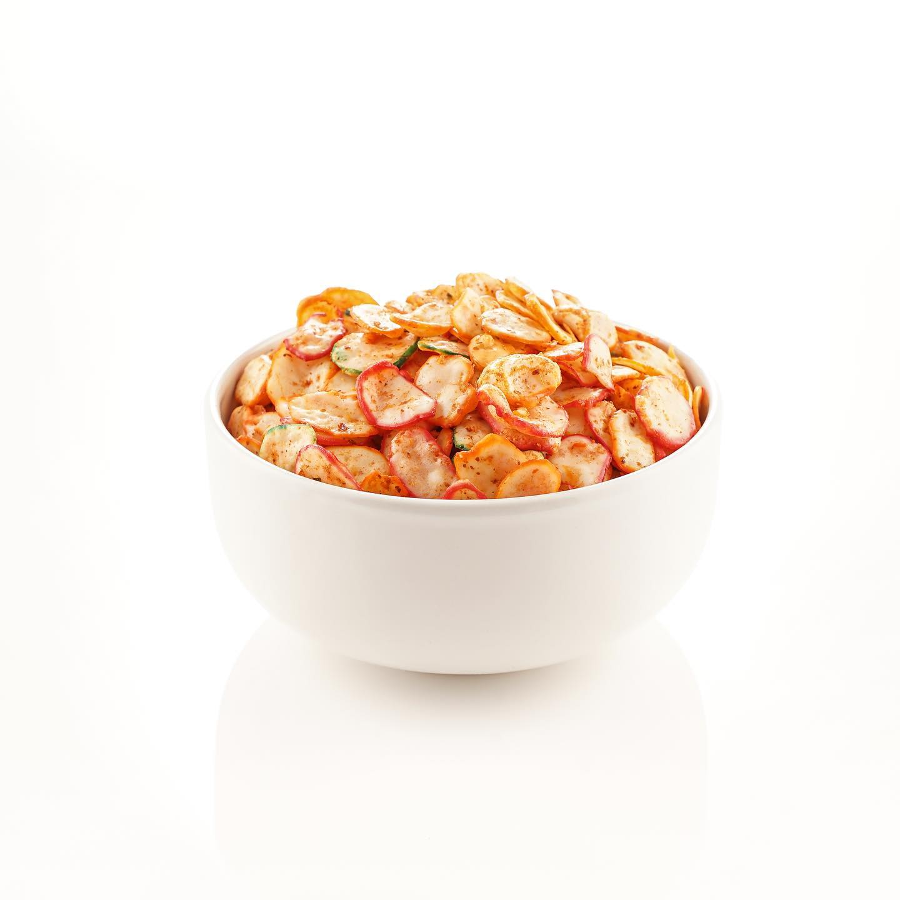

Kerupuk Seblak

Kerupuk seblak adalah camilan berbahan dasar kerupuk yang digoreng dan diberi bumbu seblak kering. Bercita rasa pedas, gurih, dan renyah.
Komposisi:
-
- Kerupuk mentah
- Minyak goreng
- Penyedap rasa
- Bubuk cabai
- Daun jeruk
Cara Pembuatan:
-
1. Rendam kerupuk mentah dengan minyak goreng di dalam penggorengan
2. Setelah terandam semua, nyalakan kompor dengan api kecil
3. Aduk terus sampai minyak panas dan tunggu sampai kerupuk matang
4. Angkat dan tiriskan kerupuk
5. Beri bumbu penyedap rasa, bubuk cabai, dan daun jeruk yang sudah digoreng
6. Aduk dan campur bumbu sampai merata
7. Kerupuk seblak sudah siap disajikan